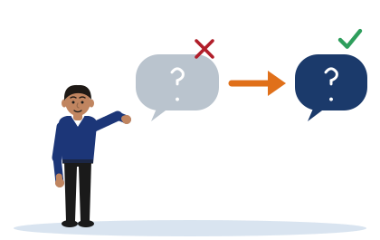

Name the Move
[Illustrative example - do not cite] Kavindu, Pasan and Ishara are invented students.
One idea
A weak question fails in a way that has a name, and one named editing move repairs it. Learn the move, not only the before and after.

Step 1. Find the weak parts
Tap every part of the question that makes it weak. Then check.
Step 2. Name the move
Which editing move repairs this question? The three moves are the ones the notes name.
Step 3. Watch the move work
The strong question is built one part at a time. Each part repairs one weakness.